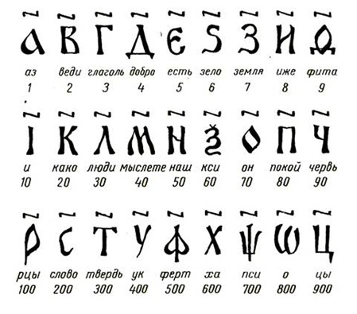
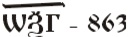

| Эта нумерация была создана вместе со славянской алфавитной системой для перевода священных библейских книг для славян греческими монахами братьями Кириллом и Мефодием в IX веке. Эта форма записи чисел получила большое распространение в связи с тем, что имела полное сходство с греческой записью чисел. До XVII века эта форма записи чисел была официальной на территории современной России, Белоруссии, Украины, Болгарии, Венгрии, Сербии и Хорватии. До сих пор православные церковные книги используют эту нумерацию.

Числа записывали из цифр так же слева, направо, от больших к меньшим. Числа от 11 до 19 записывались двумя цифрами, причем единица шла перед десятком:
Читаем дословно "четырнадцать" - "четыре и десять". Как слышим, так и пишем: не 10+4, а 4+10, - четыре и десять. Числа от 21 и выше записывались наоборот, сначала писали знак полных десятков.
Запись числа, использованная славянами аддитивная, то есть в ней используется только сложение:
 (800+60+3)
Для того чтобы не перепутать буквы и цифры, использовались титла - горизонтальные черточки над числами, что мы видим на рисунке.
Для обозначения чисел больших, чем 900 использовались специальные значки, которые дорисовывались к букве. Так образовывались числа:

Славянская нумерация просуществовала до конца XVII столетия, пока с реформами Петра I в Россию из Европы не пришла позиционная десятичная система счисления.
В настоящее время используется в книгах на церковнославянском языке |